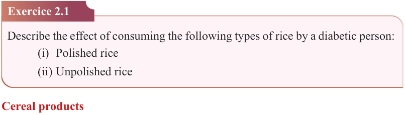
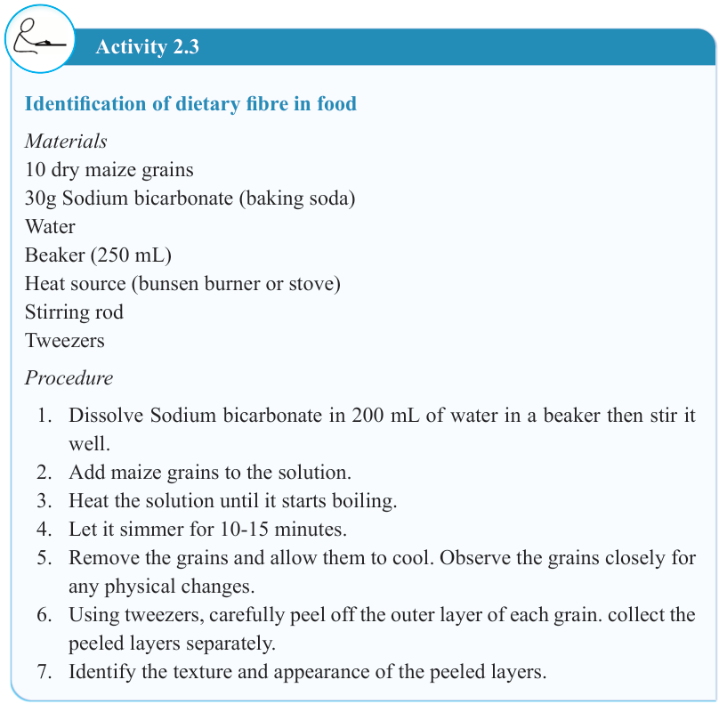

22


Food and Human Nutrition

Form Two


Activity 2.3
Identification of dietary fibre in food
Materials
10 dry maize grains
30g Sodium bicarbonate (baking soda)
Water
Beaker (250 mL)
Heat source (bunsen burner or stove)
Stirring rod
Tweezers
Procedure
1. Dissolve Sodium bicarbonate in 200 mL of water in a beaker then stir it well.
2. Add maize grains to the solution.
3. Heat the solution until it starts boiling.
4. Let it simmer for 10-15 minutes.
5. Remove the grains and allow them to cool. Observe the grains closely for any physical changes.
6. Using tweezers, carefully peel off the outer layer of each grain. collect the peeled layers separately.
7. Identify the texture and appearance of the peeled layers.
Exercice 2.1
Describe the effect of consuming the following types of rice by a diabetic person:
(i) Polished rice
(ii) Unpolished rice
Cereal products
Most cereals can be processed into a variety of products. The most common product derived from the milling of cereals is flour. Other cereal-products include breakfast cereals such as rice flakes made from rice and cornflakes made from maize. Likewise, wheat is used to produce products like pasta, noodles and semolina.
17/09/2025 16:30